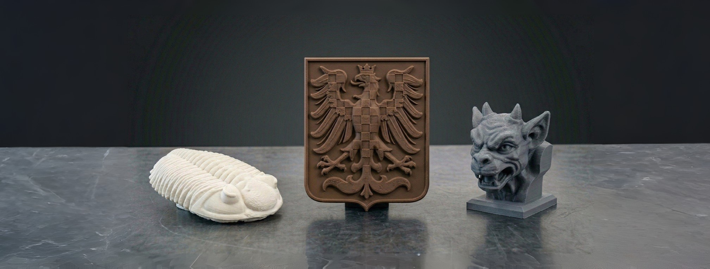

HISTORIE & KULTURA
Repliky pro muzea, hrady a zámky.
Pro instituce, které chtějí návštěvníkům umožnit dotek bez rizika poškození originálu, vytváříme věrné repliky exponátů vhodné k volnému osahání.

Co řešíme
- Haptické kopie exponátů pro nevidomé i běžné návštěvníky
- Repliky k vystavení mimo vitrínu
- Skenování modelu pro digitální archivaci
- Edukační modely pro výklad a workshopy
Proč 3D Kastl Studio
- Šetrné bezkontaktní skenování originálu
- Zachování detailů povrchu i tvaru
- Konzultace s kurátory a správci sbírek
- Odolné materiály na časté zacházení
POSTUP
Od originálu k bezpečné replice
Digitalizace přináší revoluci do způsobu, jakým kulturní dědictví chráníme, studujeme i prezentujeme. Spojením šetrného 3D skenování a precizního 3D tisku pomáhám muzeím, galeriím a archivům otevírat nové možnosti, jak přiblížit historii veřejnosti bez rizika poškození originálů.
Co všechno pro vás mohu udělat?
- Bezkontaktní 3D skenování: Bezpečné digitální nasnímání tvarově složitých artefaktů, historických detailů či architektonických prvků s přesností na setiny milimetru.
- Digitální archivace a dokumentace: Vytvoření přesného „digitálního dvojčete" předmětu pro badatelské účely, stavové zprávy nebo jako záloha pro případ poškození originálu.
- Muzejní repliky a haptické výstavy: Výroba věrných kopií exponátů určených pro edukační programy nebo pro nevidomé a slabozraké návštěvníky, kteří si tak mohou na historii bezpečně sáhnout.
- Virtuální rekonstrukce (Digital Restoration): V CADu (Blender / Nomad Sculpt) dokážu poškozenému či neúplnému naskenovanému předmětu virtuálně vrátit jeho původní, neponičenou podobu.
- Podklady pro restaurování: Tisk přesných tvarových šablon, doplňků chybějících částí nebo podstavců na míru pro bezpečné vystavení.
Stručný postup
- Šetrný sken: Nemůže-li exponát k nám, předmět nasnímám přímo u vás pomocí profesionálního skeneru (infračervené světlo / modrý laser), který je k historickým povrchům maximálně šetrný.
- Digitální zpracování: Sken vyčistím, optimalizuji pro archivaci, případně digitálně zrekonstruuji chybějící části. Výstupem pro vás může být čistě digitální model (OBJ, STL).
- Precizní tisk: Pokud je cílem replika, vytisknu ji z materiálu vhodného i pro případnou postprodukci (patinování, malbu), aby výsledný vjem dokonale odpovídal originálu.
Ceník — Historie & Kultura
| Služba | Cena | Poznámka |
|---|---|---|
| 3D skenování ve studiu | 880 Kč / hod | Šetrná manipulace v rukavicích, bezpečné upevnění. |
| 3D skenování v depozitáři | 1 460 Kč / hod | Digitalizace přímo v instituci — bez nutnosti převozu. |
| Služba | Cena | Poznámka |
|---|---|---|
| Digitální restaurování a CAD | 860 Kč / hod | Retuše, domodelování chybějících částí, výstup OBJ / STL. |
| Služba | Cena | Poznámka |
|---|---|---|
| Tisk expozičních / haptických modelů | 80 Kč / hod | Důraz na detail povrchu a finální vzhled repliky. |
| Materiál | Cena / gram | Nákupní cena / kg |
|---|---|---|
| PETG (standardní) | 1,20 Kč / g | 479 Kč / kg (Spectrum) |
| PETG — imitace dřeva / kovu | 1,80 Kč / g | ~720 Kč / kg (speciální estetické) |
| PCTG (odolný, haptický) | 1,63 Kč / g | 650 Kč / kg |
| Pásmo | Cena | Oblast |
|---|---|---|
| Lokální (do 15 km) | 416 Kč | Klášterec n. O., Kadaň. |
| Okresní (do 35 km) | 930 Kč | Chomutov, Ostrov a okolí. |
| Regionální (do 65 km) | 1 760 Kč | Regionální muzea — KV, Most, Žatec. |
| Vzdálené výjezdy (>65 km) | 16 Kč / km | Celková trasa tam i zpět. |
Minimální fakturace 2 500 Kč / zakázka. Jak vzniká cena?
Plánujete expozici s hmatovými exponáty?
Napište nám o svém exponátu — poradíme, jak k replice přistoupit citlivě a věrně.
Kontaktovat 3D Kastl Studio